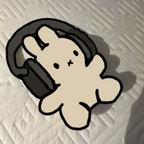

Nesse site vou falar um pouco sobre mim, como um blog, com o objetivo de ganhar alguma nota. Então, caso não me conheça, me chamo Yohanna; caso conheça, olá novamente!
Meu nome completo é Yohanna de Brito Lourenço, tenho 16 anos e sou de Ampére. Moro com meus pais e vejo minha avó todos os dias. Tenho uma cachorrinha chamada Zuri. Meu aniversário é dia 25 de setembro!